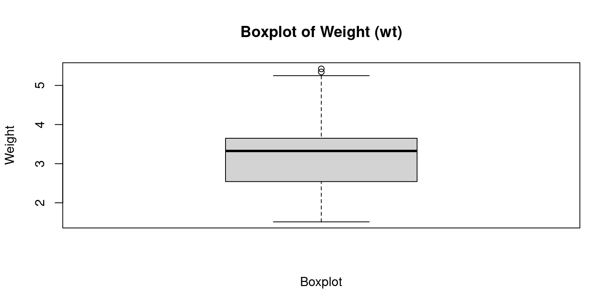
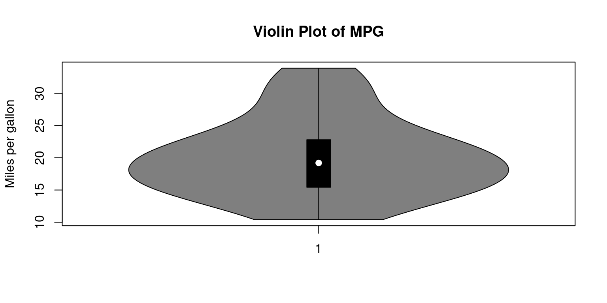
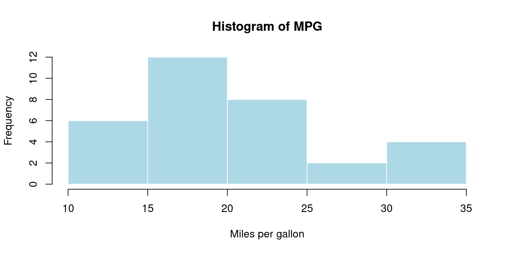
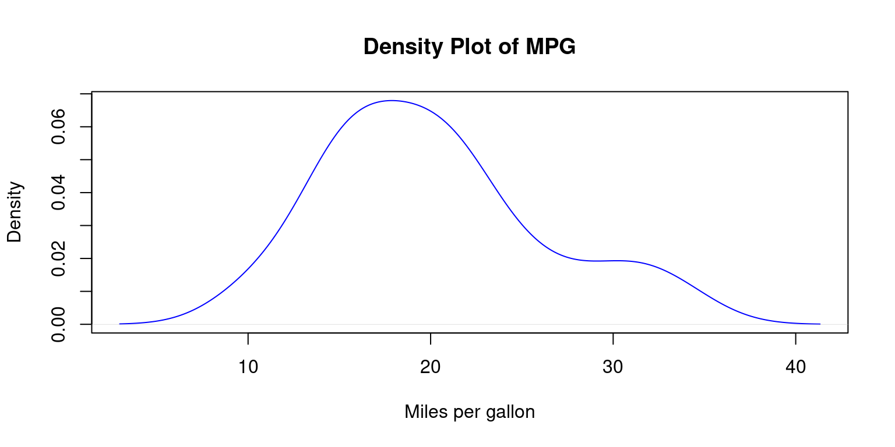
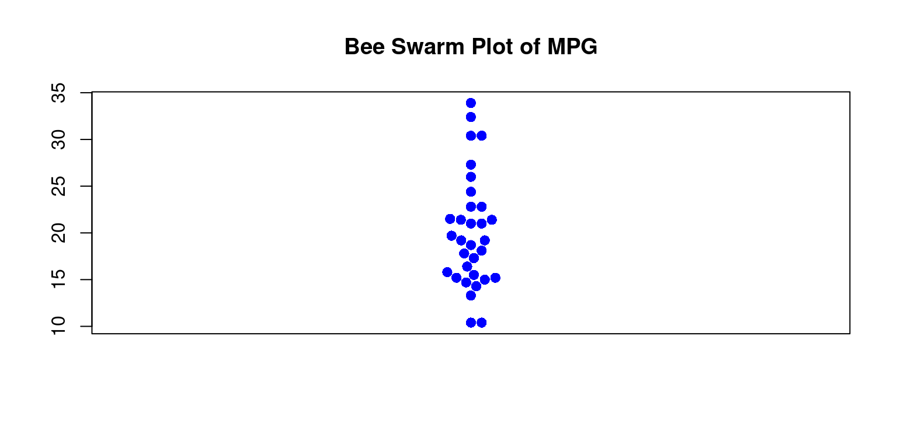

data(mtcars)
attach(mtcars)Continuous Data (1 of 3)
July 23, 2023
Univariate Continuous Data
- Reading Data and Attaching Data to Memory
Measures of Central Tendency
In R, we can summarize continuous data using descriptive statistics such as measures of central tendency (mean, median, and mode).
Measure the mean and median of the
wtof all the cars in the dataframemtcars
# Mean of wt in the mtcars dataframe
mean(mtcars$wt)[1] 3.21725# Median of wt in the mtcars dataframe
median(mtcars$wt)[1] 3.325In the above code, we calculate the mean and median of the mpg column using the
mean()andmedian()functions, respectively.To calculate the mode of the mpg column, we first load the
modeestpackage using thelibrary()function, and then use themfv()function to compute the mode.
# Mode of wt in the mtcars dataframe
library(modeest)
mfv(mtcars$mpg) # Mode[1] 10.4 15.2 19.2 21.0 21.4 22.8 30.4- Note that the mtcars dataset contains continuous data, and so it does not have a well-defined mode in the traditional sense. The
mfv()function computes the mode using a kernel density estimator, which may not always correspond to a single value in the dataset.
Measures of Variability
In R, we can calculate measures of variability (range, interquartile range, variance, and standard deviation).
To calculate these statistics, we can use built-in functions in R such as
range(),IQR(),var(), andsd().
# Standard Deviation of wt in the mtcars dataframe
sd(mtcars$wt)[1] 0.9784574# Variance of wt in the mtcars dataframe
var(mtcars$wt)[1] 0.957379# Range of wt in the mtcars dataframe
range(mtcars$wt)[1] 1.513 5.424# Inter-Quartile Range of wt in the mtcars dataframe
IQR(mtcars$wt)[1] 1.02875- Note that the range() function returns the minimum and maximum values in the dataset, while the IQR() function returns the difference between the 75th and 25th percentiles.
Other functions
# Minimum wt in the mtcars dataframe
min(mtcars$mpg)[1] 10.4# Maximum wt in the mtcars dataframe
max(mtcars$mpg)[1] 33.9Summarizing a data column
summary()
- Display a summary of
mpgin the dataframe mtcars usingsummary()
summary(mtcars$mpg) Min. 1st Qu. Median Mean 3rd Qu. Max.
10.40 15.43 19.20 20.09 22.80 33.90 describe()
- Display a summary of the
mpgin the dataframe mtcars usingdescribe()
library(psych)Registered S3 method overwritten by 'psych':
method from
plot.residuals rmutildescribe(mtcars$mpg) vars n mean sd median trimmed mad min max range skew kurtosis se
X1 1 32 20.09 6.03 19.2 19.7 5.41 10.4 33.9 23.5 0.61 -0.37 1.07Visualizing Univariate Continuous Data
Boxplot
A boxplot is a graphical representation of the distribution of continuous data.
Display the Boxplot of the
wtof the cars in themtcarsdataset
boxplot(mtcars$wt,
xlab = "Boxplot",
ylab = "Weight",
main = "Boxplot of Weight (wt)"
)
The resulting boxplot will display the median, quartiles, and any outliers in the data.
The box represents the interquartile range, which contains the middle 50% of the data.
The whiskers extend to the minimum and maximum non-outlier values, or 1.5 times the interquartile range beyond the quartiles, whichever is shorter.
Any points outside of the whiskers are considered outliers and are plotted individually.
Violin plot
A violin plot is similar to a boxplot, but instead of just showing the quartiles, it displays the full distribution of the data using a kernel density estimate.
We can create a violin plot in R using the violinplot() function from the vioplot package.
# Load the vioplot package
library(vioplot)Loading required package: smPackage 'sm', version 2.2-5.7: type help(sm) for summary informationLoading required package: zoo
Attaching package: 'zoo'The following objects are masked from 'package:base':
as.Date, as.Date.numeric# Create a violin plot of mpg column
vioplot(mtcars$mpg,
main="Violin Plot of MPG",
ylab="Miles per gallon")
In the above code, we create a violin plot of the
mpgcolumn using thevioplot()function. Themainargument is used to specify the title of the plot, and theylabargument is used to specify the label for the y-axis.The resulting plot will display the full distribution of the
mpgdata using a kernel density estimate, with thicker sections indicating a higher density of data points.The plot also shows the median, quartiles, and any outliers in the data.
Histogram
A histogram is a plot that shows the frequency of each value or range of values in a dataset.
It can be useful for showing the shape of the distribution of the data. We can create a histogram in R using the
hist()function.
# Create a histogram of mpg column
hist(mtcars$mpg,
main="Histogram of MPG",
xlab="Miles per gallon",
col="lightblue",
border="white")
We create a histogram of the
mpgcolumn using thehist()function. The main argument is used to specify the title of the plot, and the xlab argument is used to specify the label for the x-axis.The
colargument is used to set the color of the bars in the histogram, and the border argument is used to set the color of the border around the bars.The resulting histogram will display the frequency of
mpgvalues in the dataset, with the bars representing the number of observations falling within a specific range of values.
Density plot
- A density plot is similar to a histogram, but instead of displaying the frequency of each value, it shows the probability density of the data.
# Create a density plot of mpg column
plot(density(mtcars$mpg),
main="Density Plot of MPG",
xlab="Miles per gallon",
col="blue")
In the above code, we create a density plot of the mpg column using the
density()function.The
plot()function is used to plot the resulting density object.The
mainargument is used to specify the title of the plot, and thexlabargument is used to specify the label for the x-axis.The
colargument is used to set the color of the plot line.The resulting plot will display the probability density of
mpgvalues in the dataset, with the curve representing the distribution of the data.
Bee Swarm plot
A bee swarm plot is a plot that displays all of the individual data points along with a visual representation of their distribution.
It can be useful for displaying the distribution of small datasets.
# Load the beeswarm package
library(beeswarm)
# Create a bee swarm plot of mpg column
beeswarm(mtcars$mpg,
main="Bee Swarm Plot of MPG",
pch=16,
cex=1.2,
col="blue")
In the above code, we load the
beeswarmpackage using thelibrary()function.We then create a bee swarm plot of the
mpgcolumn using thebeeswarm()function.The
mainargument is used to specify the title of the plot.The
pchargument is used to set the type of points to be plotted, and thecexargument is used to set the size of the points.The
colargument is used to set the color of the points.The resulting plot will display the individual
mpgvalues in the dataset as points on a horizontal axis, with no overlap between points. This provides a visual representation of the distribution of the data, as well as any outliers or gaps in the data.